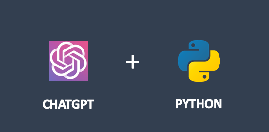

Python OpenAI
openai は、OpenAI の一連のモデルやサービスと対話するための強力な Python ライブラリです。
openai はすべての RESTful API 呼び出しをカプセル化しており、開発者は自分の Python アプリケーションに自然言語処理、画像生成、音声認識などの強力な AI 機能を簡単に統合できます。
主な機能：
- テキスト生成：GPT-4 や GPT-5 などのモデルを使用して、記事、コード、要約、会話などを生成します。
- 画像生成：DALL-E モデルを使用して、テキストの説明に基づいて画像を作成します。
- 埋め込み（Embeddings）：テキストをベクトル表現に変換し、セマンティック検索、テキスト分類、クラスタリングなどのタスクに一般的に使用されます。
- 音声からテキストへ：Whisper モデルを使用して音声ファイルをテキストに書き起こします。
- 微調整（Fine-tuning）：独自のデータセットを提供して、より特化したモデルをトレーニングします。
- アシスタント（Assistants）API：コンテキストを理解し、ツールを呼び出し、長期的な対話ができる複雑なアプリケーションを構築します。
openai オープンソースアドレス：https://github.com/openai/openai-python

使い方は？
環境要件：
- Python バージョン：3.9 以上。
- 依存ライブラリ：httpx（デフォルト）、aiohttp（オプション）、websockets（Realtime API に必要）。
まず、pip で openai ライブラリをインストールする必要があります：
pip install openai 或 pip3 install openai
次に、OpenAI 公式サイトにアクセスしてhttps://platform.openai.com/ アカウントを登録し、API キーページで API Key を生成します。
インストールバージョン確認：
import openai print(openai.__version__) # 输出当前 SDK 版本
例
from openai import OpenAI
client = OpenAI(
# This is the default and can be omitted
api_key="あなたが申請した API key",
)
response = client.responses.create(
model="gpt-4o",
instructions="You are a coding assistant that talks like a pirate.",
input="How do I check if a Python object is an instance of a class?",
)
print(response.output_text)
パラメータの説明：
| パラメータ名 | 必須かどうか | 型 | 機能の説明 |
|---|---|---|---|
api_key |
である | str |
申請した OpenAI key |
model |
である | str |
使用する OpenAI 大規模モデルを指定し、能力、推論レベル、コストを決定します。 |
instructions |
否 | str |
システムレベル命令（System Prompt）。モデルのアイデンティティ、行動規範、表現スタイルを定義し、優先順位は以下のものより高くなります。input |
input |
である | str / list |
ユーザー入力内容。具体的な問題やタスクを記述します。 |
サードパーティモデル
中国国内から現在 OpenAI にアクセスするのは少し面倒ですが、国内の多くも OpenAI に対応しています。例えば DeepSeek、千问、GLM などです。
DeepSeek
DeepSeek API は OpenAI の API 形式と完全に互換性があり、わずかな設定を変更するだけで、OpenAI SDK または互換ツールを使用して DeepSeek API に直接アクセスできます。
| パラメータ | 値/説明 |
|---|---|
| base_url | 必須、固定値：https://api.deepseek.com（記入することもできますhttps://api.deepseek.com/v1、これは OpenAI との互換性のためだけで、v1 はモデルバージョンとは関係ありません） |
| api_key | 必須。先に DeepSeek 公式サイトで専用の API Key を申請する必要があります（申請URL：https://platform.deepseek.com/） |
| model | 必須。設定するモデル：
|
例
from openai import OpenAI
client = OpenAI(
api_key=os.environ.get('DEEPSEEK_API_KEY'), # 推荐通过环境变量配置，也可直接写死（不推荐）
base_url="https://api.deepseek.com")
response = client.chat.completions.create(
model="deepseek-v4-flash",
messages=[
{"role": "system", "content": "You are a helpful assistant"},
{"role": "user", "content": "Hello"},
],
stream=False # stream=False 非流式（一次性返回）、stream=True 流式（实时返回）
)
print(response.choices[0].message.content)
使用方法
次に、OpenAI SDK を使用して百炼サービス上の通义千问モデルにアクセスします。
非ストリーミング呼び出しの例
例
import os
def get_response():
client = OpenAI(
api_key="sk-xxx", # 请用阿里云百炼 API Key
base_url="https://dashscope.aliyuncs.com/compatible-mode/v1", # DashScope SDKのbase_urlを設定
)
completion = client.chat.completions.create(
model="qwen-plus", # ここではqwen-plusを例にします。必要に応じてモデル名を変更できます。モデルリスト：https://help.aliyun.com/zh/model-studio/getting-started/models
messages=[{'role': 'system', 'content': 'You are a helpful assistant.'},
{'role': 'user', 'content': 'あなたは誰ですか？'}]
)
# json 数据
#print(completion.model_dump_json())
print(completion.choices[0].message.content)
if __name__ == '__main__':
get_response()
コードを実行すると、以下の結果が得られます：
私は通義千問（Qwen）です。阿里巴巴グループ傘下の通義実験室が独自に開発した超大規模言語モデルです。質問への回答や文章作成のお手伝いができます。例えば、物語や公文書、メール、脚本の執筆、論理推論、プログラミングなどが可能で、意見を述べたり、ゲームを楽しんだりすることもできます。何か質問やお困りごとがあれば、いつでもお気軽にお知らせください！
ストリーミング呼び出しの例
例
def get_response():
client = OpenAI(
api_key="sk-xxx",
base_url="https://dashscope.aliyuncs.com/compatible-mode/v1",
)
completion = client.chat.completions.create(
model="qwen-plus",
messages=[
{'role': 'system', 'content': 'You are a helpful assistant.'},
{'role': 'user', 'content': 'あなたは誰ですか？'}
],
stream=True,
stream_options={"include_usage": True}
)
for chunk in completion:
# chunk 里可能没有 choices 或 delta
if hasattr(chunk, "choices") and len(chunk.choices) > 0:
choice = chunk.choices[0]
if hasattr(choice, "delta") and hasattr(choice.delta, "content"):
print(choice.delta.content, end='', flush=True)
if __name__ == '__main__':
get_response()
コードを実行すると、以下の結果が得られます：
私は通義千問（Qwen）です。阿里巴巴グループ傘下の通義実験室が独自に開発した超大規模言語モデルです。質問への回答や文章作成のお手伝いができます。例えば、物語や公文書、メール、脚本の執筆、論理推論、プログラミングなどが可能で、意見を述べたり、ゲームを楽しんだりすることもできます。何か質問やお困りごとがあれば、いつでもお気軽にお知らせください！
特徴的な機能
ビジョン（Vision）機能
画像入力（URL または Base64 エンコード）に対応し、マルチモーダル対話を実現します。
画像 URL 入力：
例
img_url = "https://upload.wikimedia.org/wikipedia/commons/thumb/d/d5/2023_06_08_Raccoon1.jpg/1599px-2023_06_08_Raccoon1.jpg"
response = client.responses.create(
model="gpt-5.2",
input=[
{
"role": "user",
"content": [
{"type": "input_text", "text": prompt},
{"type": "input_image", "image_url": img_url},
],
}
],
)
print(response.output_text)
Base64 エンコード画像入力：
例
from openai import OpenAI
client = OpenAI()
prompt = "What is in this image?"
# ローカル画像を読み込んで Base64 にエンコードする
with open("path/to/image.png", "rb") as image_file:
b64_image = base64.b64encode(image_file.read()).decode("utf-8")
response = client.responses.create(
model="gpt-5.2",
input=[
{
"role": "user",
"content": [
{"type": "input_text", "text": prompt},
{"type": "input_image", "image_url": f"data:image/png;base64,{b64_image}"},
],
}
],
)
非同期使用（Async usage）
OpenAI を AsyncOpenAI に置き換え、await を使用して API を呼び出します：
基本的な非同期の例：
例
import asyncio
from openai import AsyncOpenAI
client = AsyncOpenAI(
api_key=os.environ.get("OPENAI_API_KEY"),
)
async def main() -> None:
response = await client.responses.create(
model="gpt-5.2",
input="Explain disestablishmentarianism to a smart five year old."
)
print(response.output_text)
asyncio.run(main())
非同期シナリオの最適化（aiohttp バックエンド）のための拡張バージョンのインストール：
pip install openai[aiohttp]
aiohttp バックエンドの最適化：
例
import asyncio
from openai import DefaultAioHttpClient, AsyncOpenAI
async def main() -> None:
# 上下文管理器确保资源释放
async with AsyncOpenAI(
api_key=os.environ.get("OPENAI_API_KEY"),
http_client=DefaultAioHttpClient(), # 启用 aiohttp 后端
) as client:
chat_completion = await client.chat.completions.create(
messages=[{"role": "user", "content": "Say this is a test"}],
model="gpt-5.2",
)
asyncio.run(main())
ストリーミング応答（Streaming responses）
Server Side Events（SSE）に基づいて応答をリアルタイムに取得します。同期/非同期インターフェースは同じです。
同期ストリーミングの例：
例
client = OpenAI()
stream = client.responses.create(
model="gpt-5.2",
input="Write a one-sentence bedtime story about a unicorn.",
stream=True, # 开启流式输出
)
for event in stream:
print(event) # 逐段打印响应
非同期ストリーミングの例：
例
from openai import AsyncOpenAI
client = AsyncOpenAI()
async def main():
stream = await client.responses.create(
model="gpt-5.2",
input="Write a one-sentence bedtime story about a unicorn.",
stream=True,
)
async for event in stream:
print(event)
asyncio.run(main())
リアルタイム API（Realtime API）
低遅延のマルチモーダル対話（テキスト/音声）。WebSocket ベースで実装され、websockets ライブラリに依存します。
基本的なテキストの例：
例
from openai import AsyncOpenAI
async def main():
client = AsyncOpenAI()
# 建立实时连接
async with client.realtime.connect(model="gpt-realtime") as connection:
# 更新会话配置（仅输出文本）
await connection.session.update(
session={"type": "realtime", "output_modalities": ["text"]}
)
# 发送用户消息
await connection.conversation.item.create(
item={
"type": "message",
"role": "user",
"content": [{"type": "input_text", "text": "Say hello!"}],
}
)
# 触发模型响应
await connection.response.create()
# 监听实时事件
async for event in connection:
if event.type == "response.output_text.delta":
print(event.delta, flush=True, end="") # 实时打印文本片段
elif event.type == "response.output_text.done":
print() # 响应结束换行
elif event.type == "response.done":
break # 终止监听
asyncio.run(main())
リアルタイム API のエラー処理：
例
from openai import AsyncOpenAI
client = AsyncOpenAI()
async def main():
async with client.realtime.connect(model="gpt-realtime") as connection:
async for event in connection:
if event.type == 'error':
# 捕获并处理错误事件（连接不会断开）
print(f"错误类型：{event.error.type}")
print(f"错误码：{event.error.code}" → "エラーコード：{event.error.code}")
print(f"错误信息：{event.error.message}" → "エラーメッセージ：{event.error.message}")
asyncio.run(main())
リファレンスマニュアル
以下の表の内容は次の通りです：
- 核心初始化：同步用 → コア初期化：同期用
OpenAI、非同期用AsyncOpenAI、Azure 用 → 、Azure 用AzureOpenAI，推荐通过环境变量配置 API Key。→ 、API Keyは環境変数で設定することを推奨します。 - テキスト生成：新版では優先のに
responses.create()，经典场景用 → 、クラシックなシナリオではchat.completions.create()，流式输出需设置 → 、ストリーミング出力には設定が必要stream=True。 - 高级能力：支持多模态（图片输入）、实时 API、文件上传/微调，错误处理需捕获 → 高度な機能：マルチモーダル（画像入力）、リアルタイムAPI、ファイルアップロード/ファインチューニングに対応、エラー処理では
APIError子类，超时/重试可灵活配置。→ サブクラスをキャッチし、タイムアウト/リトライを柔軟に設定できます。
インストールとインポート
安装官方 SDK：→ 公式SDKをインストール：
pip install --upgrade openai
导入核心类：→ コアクラスをインポート：
from openai import OpenAI, AsyncOpenAI, AzureOpenAI
クライアントの作成
创建标准 OpenAI 客户端：→ 標準のOpenAIクライアントを作成：
from openai import OpenAI client = OpenAI(api_key="YOUR_API_KEY")
通过环境变量创建客户端：→ 環境変数でクライアントを作成：
import os from openai import OpenAI os.environ["OPENAI_API_KEY"] = "YOUR_API_KEY" client = OpenAI()
リクエストのタイムアウトとリトライ回数を設定：
client = OpenAI(
timeout=30,
max_retries=2
)
テキスト生成（Responses API）
最も基本的なテキスト生成リクエスト：
response = client.responses.create(
model="gpt-5.2",
input="用一句话解释什么是 Python"
)
print(response.output_text)
instructions でモデルの動作を制約：
response = client.responses.create(
model="gpt-5.2",
instructions="你是一个严谨的 Python 教程作者",
input="解释什么是列表推导式"
)
print(response.output_text)
マルチターン対話
input 配列を使用してコンテキスト付き対話を構築：
response = client.responses.create(
model="gpt-5.2",
input=[
{"role": "user", "content": "Python 是什么？"},
{"role": "assistant", "content": "Python 是一门高级编程语言。"},
{"role": "user", "content": "它适合做什么？"}
]
)
print(response.output_text)
構造化出力（JSON Schema）
モデルにSchema準拠のJSONデータを返すよう要求：
response = client.responses.create(
model="gpt-5.2",
response_format={
"type": "json_schema",
"json_schema": {
"name": "tech_summary",
"schema": {
"type": "object",
"properties": {
"title": {"type": "string"},
"summary": {"type": "string"}
},
"required": ["title", "summary"]
}
}
},
input="介绍 asyncio"
)
print(response.output_parsed)
ツール呼び出し（Function Calling）
ツールを定義し、モデルに呼び出しを自動判断させる：→ ツールを定義し、モデルに呼び出しを自動判断させる：
tools = [
{
"type": "function",
"function": {
"name": "get_weather",
"description": "获取城市天气",
"parameters": {
"type": "object",
"properties": {
"city": {"type": "string"}
},
"required": ["city"]
}
}
}
]
response = client.responses.create(
model="gpt-5.2",
tools=tools,
input="北京今天天气怎么样？"
)
print(response.output)
ストリーミング出力（Streaming）
同步流式输出：→ 同期ストリーミング出力：
with client.responses.stream(
model="gpt-5.2",
input="写一段 Python 示例代码"
) as stream:
for event in stream:
if event.type == "response.output_text.delta":
print(event.delta, end="")
异步流式输出：→ 非同期ストリーミング出力：
stream = await client.responses.create(
model="gpt-5.2",
input="解释什么是生成式 AI",
stream=True
)
async for event in stream:
print(event)
非同期呼び出し（AsyncOpenAI）
asyncio で非同期クライアントを使用：→ asyncio で非同期クライアントを使用：
import asyncio
from openai import AsyncOpenAI
client = AsyncOpenAI()
async def main():
response = await client.responses.create(
model="gpt-5.2",
input="解释什么是事件循环"
)
print(response.output_text)
asyncio.run(main())
リアルタイム API（Realtime）
WebSocket を使用した低遅延のリアルタイム対話：
async with client.realtime.connect(model="gpt-realtime") as conn:
await conn.session.update(
session={"type": "realtime", "output_modalities": ["text"]}
)
await conn.conversation.item.create(
item={
"type": "message",
"role": "user",
"content": [{"type": "input_text", "text": "你好"}]
}
)
async for event in conn:
print(event)
画像生成
根据文本生成图片：→ テキストから画像を生成：
image = client.images.generate(
model="gpt-image-1",
prompt="一只在写代码的猫",
size="1024x1024"
)
print(image.data[0].url)
埋め込み生成（Embeddings）
生成文本向量嵌入：→ テキストのベクトル埋め込みを生成：
embedding = client.embeddings.create(
model="text-embedding-3-small",
input="Hello world"
)
print(embedding.data[0].embedding)
音声からテキストへの変換（Speech to Text）
音声ファイルをテキストに変換：
audio_file = open("speech.mp3", "rb")
transcript = client.audio.transcriptions.create(
model="whisper-1",
file=audio_file
)
print(transcript.text)
テキストから音声への変換（Text to Speech）
テキストを音声ファイルに変換：
speech = client.audio.speech.create(
model="gpt-4o-mini-tts",
voice="alloy",
input="你好，欢迎使用 OpenAI"
)
with open("output.mp3", "wb") as f:
f.write(speech)
ファイル管理（Files API）
上传文件：→ ファイルをアップロード：
from pathlib import Path
client.files.create(
file=Path("data.jsonl"),
purpose="fine-tune"
)
列出文件：→ ファイルを一覧表示：
files = client.files.list()
for f in files:
print(f.id, f.filename)
删除文件：→ ファイルを削除：
client.files.delete(file_id="file-xxx")
モデル微調整（Fine-tuning Jobs）
创建微调任务：→ ファインチューニングジョブを作成：
job = client.fine_tuning.jobs.create(
training_file="file-xxx",
model="gpt-3.5-turbo"
)
print(job.id, job.status)
Webhook 検証
验证并解析 Webhook 请求：→ Webhook リクエストを検証して解析：
event = client.webhooks.unwrap(request_body, request_headers)
仅验证签名：→ 署名のみを検証：
client.webhooks.verify_signature(request_body, request_headers)
エラー処理
SDK がスローする例外をキャッチ：
import openai
try:
client.responses.create(
model="gpt-5.2",
input="test"
)
except openai.RateLimitError as e:
print("触发速率限制：", e)
except openai.APIConnectionError as e:
print("连接失败：", e)
失敗したリクエストのリクエストIDを取得：
try:
client.responses.create(model="gpt-5.2", input="test")
except openai.APIStatusError as exc:
print(exc.request_id)
Azure OpenAI 互換
初始化 Azure OpenAI 客户端：→ Azure OpenAI クライアントを初期化：
from openai import AzureOpenAI
client = AzureOpenAI(
api_version="2023-07-01-preview",
azure_endpoint="https://xxx.openai.azure.com"
)
バージョンとログ
查看 SDK 版本：→ SDK のバージョンを確認：
import openai print(openai.__version__)
开启 SDK 调试日志：→ SDK のデバッグログを有効化：
export OPENAI_LOG=debug
其他扩展 → その他の拡張更多 API 参考：→ 詳細な API リファレンス：https://github.com/openai/openai-python/blob/main/api.md